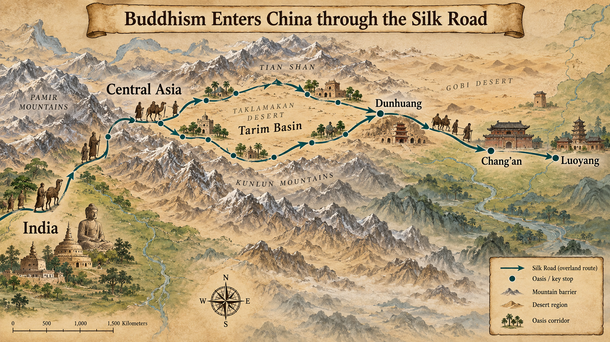
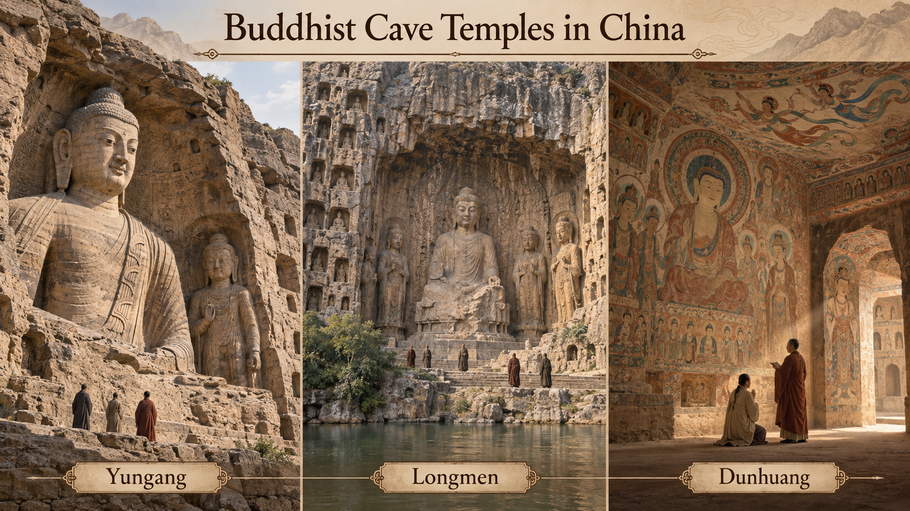
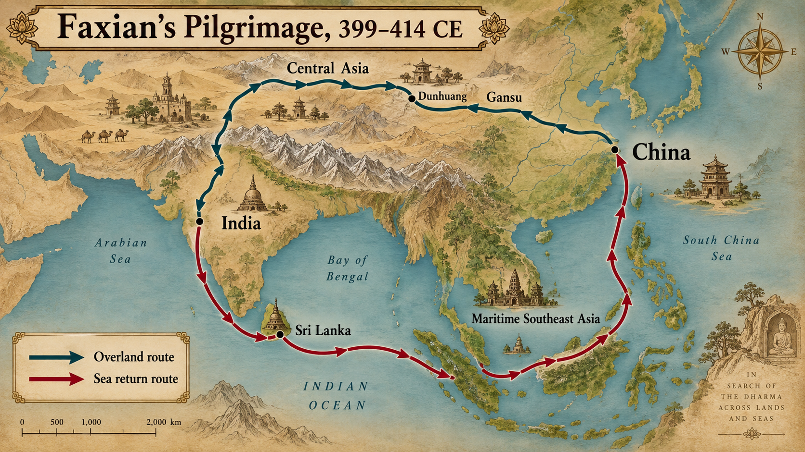

ca. 200–580 CE
How did Buddhism—an imported religion—become compelling to Chinese elites and ordinary people during political fragmentation?
Already by 477 CE in the north, there were:
First we build the history: crisis and salvation -> adaptation -> institutions -> state power.
Buddhism should have failed in China.
| Confucian Values | Buddhist Practice |
|---|---|
| Marry and produce heirs | Celibacy |
| Serve your parents | Leave your family |
| Maintain ancestral lineage and offerings | Monastic renunciation leaves the household |
| Fulfill duties within family and society | Liberation requires overcoming attachment |
| Social hierarchy natural | All beings can achieve enlightenment |
Yet Buddhism conquered China. How?
Mahayana traditions became especially influential in China
Emphasized bodhisattvas, merit transfer, compassion. Could be reconciled with Confucian ancestor veneration more easily than earlier forms.
Siddhartha Gautama (c. 563–483 BCE), Indian prince who renounced wealth, achieved enlightenment through meditation, taught path to liberation.
Actions have moral consequences that determine future rebirths. Good deeds → better rebirth. Bad deeds → worse rebirth. Provides explanation for suffering and inequality.
The repeating cycle of birth, death, and rebirth. Driven by karma and desire. Goal is to escape this cycle, not to be reborn better.
Liberation from cycle of rebirth. Not "nothingness" but release from suffering, desire, and attachments. Ultimate goal of Buddhist practice.
Enlightened being who delays final nirvana to help others achieve salvation. Embodies compassion and active engagement with suffering world. Key to Mahayana Buddhism.
Positive karma accumulated through good deeds, donations, prayers. Can be dedicated/transferred to benefit others, especially deceased relatives. Merit transfer helped reconcile Buddhist practice with Chinese family and ancestor obligations.
"Greater Vehicle" traditions became especially influential in East Asia. Key features included the bodhisattva ideal, merit transfer, compassion, and the possibility of universal salvation.

Map: Overland routes by which Buddhist texts, monks, and artistic traditions traveled from India through Central Asia into China.
Why Miracles Mattered:
"In a rough and tumultuous age, Buddhism offered appealing emphasis on kindness, charity, preservation of life, and prospect of salvation."
Central Asian monk, master of "miracle tales." Converted Later Zhao ruler Shi Le through demonstrations of Buddhist efficacy.
Teaching point: Don't teach miracles as true/false. Teach as historical signals: what counted as persuasive, what anxieties addressed, how charisma worked at court. In age when governments collapse, religion promising protection/healing/cosmic order won't struggle for audience.
One important adaptation to Chinese family and ancestor obligations:
Yan Zhitui (educated Confucian official): "wanted Buddhist services after his death and told his sons to omit meat from traditional ancestral offerings."
An educated Chinese official who honored BOTH traditions!
Buddhism succeeded because participation did not require abandoning ordinary family life.
Use your lecture notes and textbook to answer Q7.
First, list the specific conflicts Buddhism created with Chinese lineage, filial duty, and ancestor-centered practice. Then list the historical reasons Buddhism still attracted converts.
3 min: write individually | 3 min: compare with partner | 2 min: share evidence
Buddhist institutions widened the range of possible lives for women.
Q8: Buddhism did not erase patriarchy, but it created institutions in which some women could pursue a different social and spiritual path.
The textbook describes Tanhui as a young woman who studied with a foreign meditation master beginning at age eleven. When faced with an unwanted marriage, she threatened suicide rather than marry her fiance.
Why she matters: Her story shows that Buddhist institutions could offer some women an alternative social path. That option was real, but it remained shaped by family power, class, religious authority, and negotiation with male relatives.
Use your lecture notes and textbook to answer Q8.
Start with the history: what options did Buddhist institutions actually create? Then explain the limits of those options.
3 min: write | 3 min: partner check | 2 min: share one evidence-based answer
Buddhism brought new forms of religious expression:
"Earlier Chinese rarely depicted gods in human form, but now Buddhist temples were furnished with profusion of images."

Yungang, Longmen, and Dunhuang show how Buddhism reshaped China’s sacred landscape and visual culture.
In 523, Prince Dongyang, a Northern Wei royal, and wealthy local families sponsored a new cave at Dunhuang. Its central image was the historical Buddha, with meditating monks, temple guardians, and heavenly beings arranged around the sacred space.
Why it matters: Cave 285 shows Buddhism as material culture. It required patrons, artists, wealth, devotion, and a community that understood images and caves as sacred power.
The history first: Buddhism had become powerful enough that an emperor could use monastic devotion as public politics.
Northern Wei Example:
Use your lecture notes and textbook to answer Q9.
First identify why rulers supported Buddhism. Then identify why those same governments regulated monasteries and clergy.
4 min: build answer from evidence | 2 min: partner revise | 2 min: share
Shows Chinese becoming active participants, not just recipients!
Chinese Buddhist monk who traveled to India seeking authentic texts, especially monastic discipline rules (Vinaya).
Significance: His journey shows Chinese weren't just passively receiving Buddhism—they were actively seeking authentic sources, willing to risk death for texts. "Pilgrimage logic: we need the Vinaya texts." Shows China plugged into Indian Buddhist centers as equals.

Map: Faxian’s journey from China to India and back by sea in search of Buddhist texts and monastic discipline.
Political division transformed Chinese civilization culturally, ethnically, geographically, and religiously.
The Bottom Line:
Political division produced cultural integration and Buddhist transformation.
This wasn't a "dark age" of decline.
It was an era of transformation.
Chinese civilization didn't just survive conquest and division—
it incorporated new religious communities,
sacred images, monastic institutions,
and practices of salvation into Chinese life.
"The conquest of Buddhism was also the making of Chinese Buddhism."
The core lecture has answered Q7, Q8, and Q9.
Use the following slides if you want to go deeper into translation, later Buddhist traditions, and Daoist responses.
How do you explain Indian concepts in Chinese?
Interpretive strategy used by Chinese intellectuals to explain Buddhist ideas via existing categories (often Daoist terms).
Modern scholarship caution: Not just "Daoist translation method." Better understood as broader strategy in elite discussion. Sometimes in translation, often in commentary. Helpful but created distortions—nirvana isn't exactly wu wei!
These traditions began developing during and after the Period of Division and would become much more important in later centuries.
Devotional school focusing on Amitabha Buddha and rebirth in Western Paradise (Pure Land).
Why it succeeded: Simple practice (chanting Buddha's name), accessible to everyone (not just educated/monks), promises concrete reward (rebirth in paradise). It would become one of the most popular forms among ordinary Chinese.
Meditation school emphasizing sudden enlightenment and direct experience. Becomes Zen in Japan.
Historical development: Chan developed within Chinese Buddhist communities through changing approaches to meditation, monastic practice, scripture, and direct religious experience. Later interpretations often emphasized spontaneity and immediacy, but Chan should not be reduced to a simple mixture of Buddhism and Daoism.
Daoism during the Period of Division was much more than the philosophy of Laozi and Zhuangzi.
Daoist scholar and practitioner who collected and explained techniques for bodily cultivation, medicines, alchemy, and the pursuit of immortality.
Political division moved religious ideas and specialists as well as armies and refugees.
Buddhism did not replace Daoism. Competition helped transform both traditions.
→ / Space: Next | ←: Previous | S: Speaker Notes | F: Fullscreen | O: Overview | ESC: Close popup